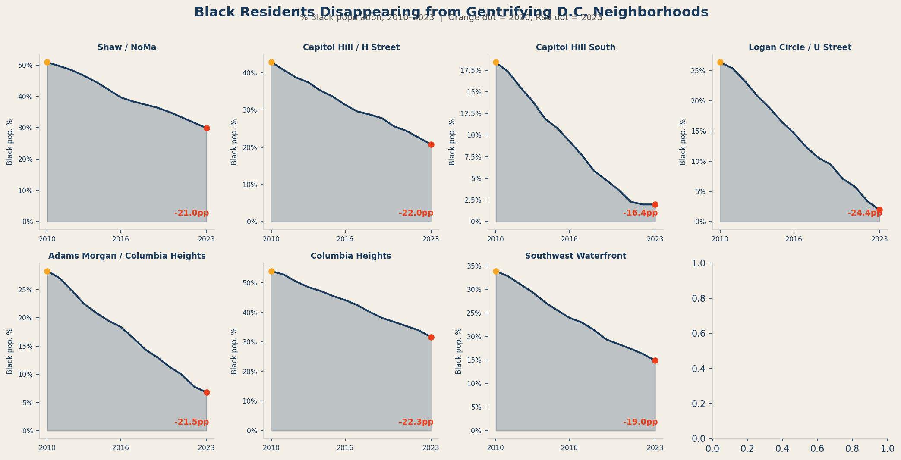

Rent data describes pressure. Demographic data records the outcome. When rents rise faster than incomes can follow, displacement happens — and it doesn't happen equally. In Washington, D.C., the communities most displaced by gentrification have been Black residents who built these neighborhoods over generations through redlining, disinvestment, and decades of policy neglect.
The small multiples below show the share of Black residents in D.C.'s eight most rapidly gentrifying ZIP codes, from 2010 to 2023. The trend is consistent and directional: in every one of these neighborhoods, the Black population share declined — in some cases dramatically.

The scatter plot below maps each ZIP code along two axes: the percentage increase in median rent from 2010 to 2023 (horizontal) and the change in Black population share over the same period (vertical). The size of each bubble reflects the 2023 eviction rate. Color indicates gentrification pressure.
The pattern is stark. ZIP codes with the largest rent increases cluster in the lower-right — their Black populations declined the most. Neighborhoods with the smallest rent increases, predominantly already-affluent areas, show the smallest demographic shifts. The direction of causation isn't perfectly established by correlation alone — but the pattern is consistent with displacement, not coincidence.
It is worth noting what demographic data cannot tell us: where people went. The Census does not track migration at the individual level. What we know from related research is that displacement in D.C. has pushed lower-income residents outward — to Prince George's County, to Charles County, to places farther from transit, farther from jobs, and farther from the social networks they built in the city. The suburbanization of poverty is not a metaphor in the D.C. region. It is a measurable, documented trend.
The people who left these neighborhoods did not leave because they wanted to. They left because staying became financially impossible.